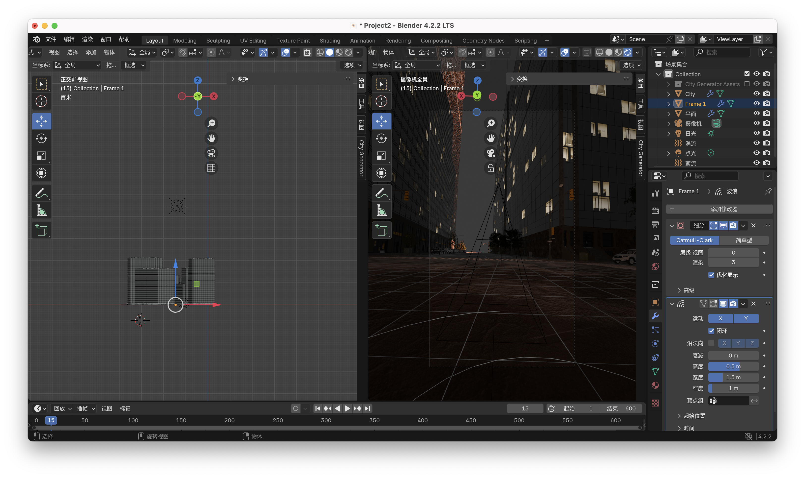
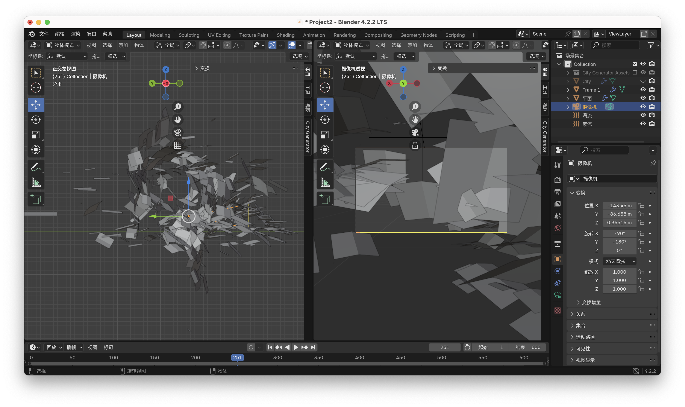
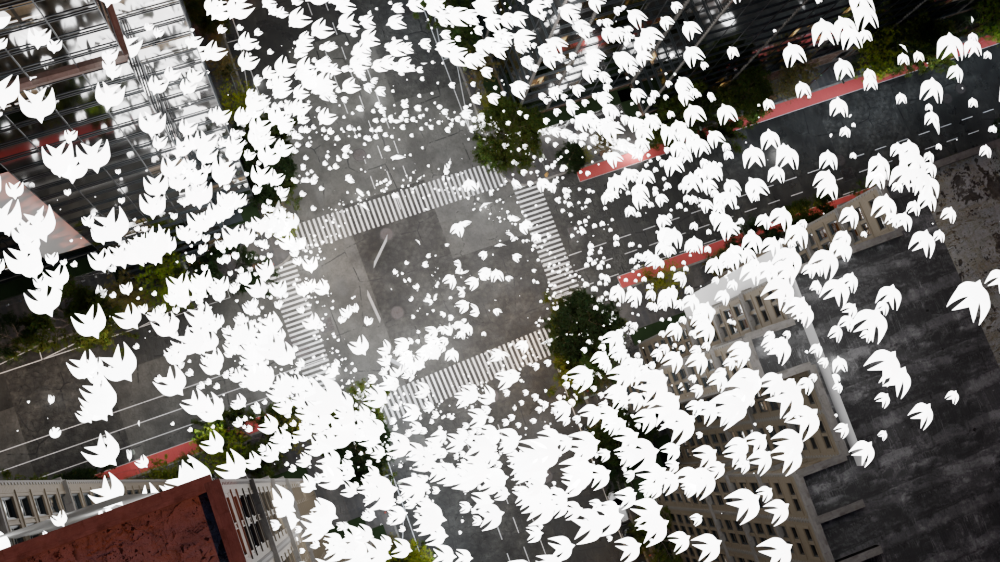
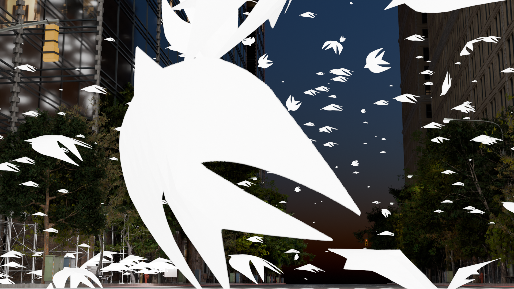

Project2_Simulation and Modeling: Accreting
My idea is to create a flock of pigeons flying through a post-apocalyptic city. The pigeons are 2D, and they fly towards us from various angles — over buildings, trees, streets, cars, and the sky. The number of pigeons gradually increases and converges around us (from a first-person perspective), eventually forming a swirling vortex around us.”
   